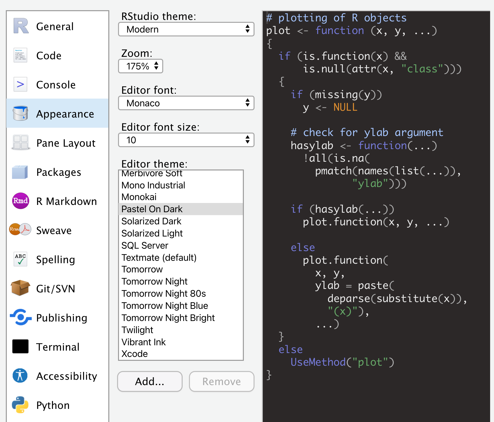
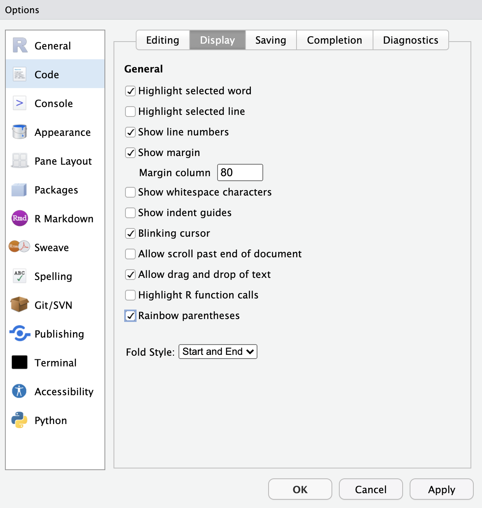
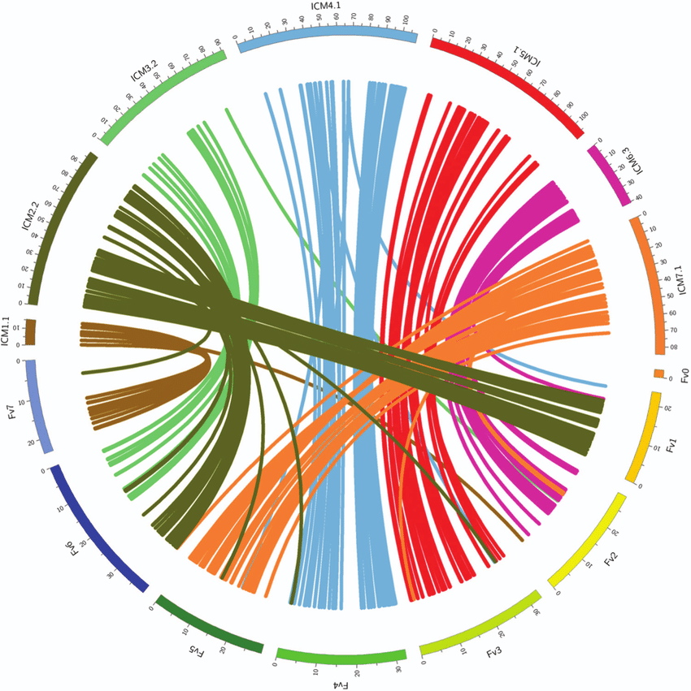

Introduction
Welcome to this interactive tutorial on the R programming language.
This tutorial runs in the learnr (Aden-Buie et al. 2023) library and provides a
shiny interface (Chang et al.
2022) that will allow you the chance to interact with the
examples in the R programming language. You may follow along by simply
working in this browser. You may find the content and learning a bit
more useful if you work on your own machine as well. This will require
loading the necessary software. For this tutorial we will use functions
from tidyverse (Wickham 2023)
libraries including ggplot2 (Wickham, Chang, et al. 2023),
dplyr (Wickham, François, et al.
2023) and magrittr (Bache and
Wickham 2022) among others in the R programming language (R Core Team 2023).
If you are also planning to run this on your own machine then you should start by installing and running R and RStudio. This video walks you through that process.
Using this tutorial
Here is an example of how this tutorial works. The code below calculates the answer to one plus one.
# Change this code so it computes two plus two
1 + 12 + 2For each example there will also generally be a small exercise after
the # mark. We will ask you to work in this interface and
make changes to the existing code. In this interface you will see
options for looking at the solution and sometimes some hints. Feel free
to run these here in the web interface and also to run them on your own
machine.
You will also always have the option to get a copy of the code to run
on your own machine. To do that you will need all the libraries. If
these do not load you will also need to use the
install.packages() function.
i.e. install.packages("datasauRus").
library(datasauRus)
library(gganimate)
library(ggplot2)
library(purrr)
library(rmarkdown)
library(tidyverse)
# part of the tidyverse:
library(dplyr)
library(magrittr)Bonus RStudio settings
You will see from the examples throughout the course that I use dark mode in RStudio. You can find these settings and choose the one you like best under Global Options > Appearance. For my display I use the ‘Pastel On Dark’ option.

Using color in code is nice and can also help you troubleshoot code
that uses lots of nested parentheses (), square brackets
[] or curly braces {}. You can adjust these
settings under Global Options > Code > Display.

Data Wrangling Part 1


The video below gives a brief overview of the content covered in this section of the tutorial. All the Data Wrangling slides are also available as a web page.
Notes on R
- Tidy code style using tidyR
- Clean and intuitive functions using dplyr
- Concise code using magrittr ‘Ceci n’est pas une pipe’

Notes on R: About process
“[…] writing R code is a hedonistically artistic, left-brained, paint-in-your-hair sort of experience […]
learn how to code the same way we learned how to catch salamanders as children – trial and error, flipping over rocks till we get a reward […]
once the ecstasy of creation has swept over us, we awake late the next morning to find our canvas covered with 2100 lines of R code […]
Heads throbbing with a statistical absinthe hangover, we trudge through it slowly over days, trying to figure out what we did.”
Andrew MacDonald
Notes on R: Focus

Notes on R: Keeping track of work
Keep it tidy
When writing .R files use the # symbol to annotate and
not run lines. This is a great way to make notes for others and for
future you.
We will talk later about using other file types like
Rmarkdown for organizing R script and other associated
languages. There it will be possible to add a lot more information and
text, citations etc. An .R file is intended for code but we can still
keep it organized in sections by ending headers with ----
or #### annotation.
# Section 1 ----
# Section 2 ####
# Section 3 ####
Look for the Table of contents in the upper right
console of the RStudio scripting pane (next to the Run
button).

Read more tips in the Tidyverse Style guide.
Data Wrangling Part 2
The video below offers a brief overview of the content covered in this section of the tutorial. Feel free to watch the video and follow along or simply work through the tutorial.
Notes on tidy R
Keep it tidy
If you are following this tutorial by running the code on your local machine (recommended) then it may make sense to check your R version by running the following code in your R console:
versionAt the time of writing this I am using R version 4.0.4
Lost Library Book (R Core Team
2023). If you do not have this version or something newer it may
make sense to update so that you can follow along without pesky version
issues.
The easiest way to get libraries for today is to install the whole
tidyverse (Wickham 2023) by typing
install.packages("tidyverse") in the R console and then
running library(tidyverse):
install.packages("tidyverse")
library(tidyverse)If you save your work to an .R file (recommended) be sure to annotate
any code that you do not intend to run each time with the #
symbol. You should only need to install tidyverse once and should be
sure to either change that line of code to
#install.packages("tidyverse") or remove it from your
script.
Read more style tips in the tidyverse style guide (Wickham 2023).
Notes on tidy R browseVignettes
Keep it tidy
Get a lot of examples and details about the tidyverse by running the
following code in the R console:
browseVignettes(package = "tidyverse"). Nearly every R
library has a collection of vignettes that walk through examples and
show, often in explicit detail, the authors intended use of the
library.
The tidy tools manifesto
In this tutorial we will be following the basic ideas behind the tidyverse.

Read the full tidyverse manifesto here.
Notes on R: tidyR process
Keep it tidy

- Good coding style is like correct punctuation:
- withoutitthingsarehardtoread
- When your data is tidy, each column is a variable, and each row is an observation
- Consistent structure lets you focus your struggle on questions about the data, not fighting to get the data into the right form for different functions
Read more style tipes in the tidyverse style guide (Wickham 2023).
Notes on R: Tidy Data
Three things make a dataset tidy:
- Each variable with its own column.
- Each observation with its own row.
- Each value with its own cell.

Read more about this from Wickham’s paper in the Journal of Statistical Software.
Wrangling: transform
- Once you have tidy data, a common first step is to transform it
- narrowing in on observations of interest
- creating new variables that are functions of existing variables
- calculating a set of summary statistics

www.codeastar.com/data-wrangling/
Wrangling: dplyr arguments
Format of dplyr
Arguments start with a data frame
- select: return a subset of the columns
- filter: extract a subset of rows
- rename: rename variables
- mutate: add new variables and columns or transform
- group_by: split data into groups
- summarize: generate tables of summary statistics
Getting your data in R
Load data

The data we will use for this course is on Github and you can save it as a .csv to your local folder.
- Load the data using the
read.csvfunction
# Use this on your machine
participants_data <- read.csv("participants_data.csv")Learn more about what this function does by typing
?read.csv in the R console.
You can also get the data from this Github repository by using the
read_csv function from the readr library (Wickham, Hester, and Bryan 2023) and
url function from base R. In this case you will want to use
the ‘save as’ option for the webpage so that you can have it stored
locally as a comma separated values (.csv) file on your
machine.
library(readr)
urlfile = "https://raw.githubusercontent.com/CWWhitney/teaching_R/master/participants_data.csv"
participants_data <- read_csv(url(urlfile))- Keep your data in the same folder structure as .RProj
- at or below the level of .RProj
Looking at the data
- View the full data in the console (see the
Viewfunction to see it in the Rstudio ‘Environment’)
participants_data- Look at the top rows of the data with the
headfunction. The default of theheadfunction is to show 6 rows. This can be changed with thenargument.
# Change the number of rows displayed to 7
head(participants_data,
n = 4)# use the ?head option to learn the details of the function
?head# look at the 'Arguments' section for the 'n' argument
?head# The 'n' argument should be changed from 'n = 4' to 'n = 7'
head(participants_data,
n = 7)head(participants_data,
n = 7)- Check the names of the variables in the data with the
namesfunction
names(participants_data)- Look at the structure of the data with the
strfunction
str(participants_data)- Call a particular variable in your data with
$
# Change the variable to gender
participants_data$ageparticipants_data$genderFollow these steps to see the result of the rest of the
transformations we perform with tidyverse.
Wrangling: dplyr library
Using dplyr
Load the dplyr library by running library(dplyr) in the
R console. do the same for other libraries we need today
library(tidyr) and library(magrittr) Wickham, François, et al. (2023).
Inspiration for many of the following materials comes from Roger Peng’s dplyr tutorial.

Read more about the dplyr library (Wickham, François, et al. 2023).
Wrangling: dplyr::select aca_work_set
Subsetting
Select
Create a subset of the data with the select
function:
# Change the selection to batch and age
select(participants_data,
academic_parents,
working_hours_per_day)select(participants_data,
batch,
age)Wrangling: dplyr::select non_aca_work_filter
Subsetting
Select
Try creating a subset of the data with the select
function:
# Change the selection
# without batch and age
select(participants_data,
-academic_parents,
-working_hours_per_day)select(participants_data,
-batch,
-age)Wrangling: dplyr::filter work_filter
Subsetting
Filter
Try creating a subset of the data with the filter
function:
# Change the selection to
# those who work more than 5 hours a day
filter(participants_data,
working_hours_per_day >10)filter(participants_data,
working_hours_per_day >5)Wrangling: dplyr::filter work_name_filter
Subsetting
Filter
Create a subset of the data with multiple options in the
filter function:
# Change the filter to those who
# work more than 5 hours a day and
# names are longer than three letters
filter(participants_data,
working_hours_per_day >10 &
letters_in_first_name >6)filter(participants_data,
working_hours_per_day >5 &
letters_in_first_name >3)Wrangling: dplyr::rename name_length
Rename
Change the names of the variables in the data with the
rename function:
# Rename the variable km_home_to_office as commute
rename(participants_data,
name_length = letters_in_first_name)rename(participants_data,
commute = km_home_to_office)Wrangling: dplyr::mutate
Mutate
# Mutate a new column named age_mean that is a function of the age multiplied by the mean of all ages in the group
mutate(participants_data,
labor_mean = working_hours_per_day*
mean(working_hours_per_day))mutate(participants_data,
age_mean = age*
mean(age))Wrangling: dplyr::mutate
Mutate
Create a commute category with the mutate function:
# Mutate new column named response_speed
# populated by 'slow' if it took you
# more than a day to answer my email and
# 'fast' for others
mutate(participants_data,
commute =
ifelse(km_home_to_office > 10,
"commuter", "local"))mutate(participants_data,
response_speed =
ifelse(days_to_email_response > 1,
"slow", "fast"))Wrangling: dplyr::summarize
Summarize
Get a summary of selected variables with summarize
# Create a summary of the participants_mutate data
# with the mean number of siblings
# and median years of study
summarize(participants_data,
mean(years_of_study),
median(letters_in_first_name))summarize(participants_data,
mean(number_of_siblings),
median(years_of_study))Wrangling: magrittr use
Pipeline %>%
- Do all the previous with a
magrittrpipeline %>%. Use thegroup_byfunction to get these results for comparison between groups.
# Use the magrittr pipe to summarize
# the mean days to email response,
# median letters in first name,
# and maximum years of study by gender
participants_data %>%
group_by(research_continent) %>%
summarize(mean(days_to_email_response),
median(letters_in_first_name),
max(years_of_study))participants_data %>%
group_by(gender) %>%
summarize(mean(days_to_email_response),
median(letters_in_first_name),
max(years_of_study))Now use the mutate function to subset the data and use
the group_by function to get these results for comparisons
between groups.
# Use the magrittr pipe to create a new column
# called commute, where those who travel
# more than 10km to get to the office
# are called "commuter" and others are "local".
# Summarize the mean days to email response,
# median letters in first name,
# and maximum years of study.
participants_data %>%
mutate(response_speed = ifelse(
days_to_email_response > 1,
"slow", "fast")) %>%
group_by(response_speed) %>%
summarize(mean(number_of_siblings),
median(years_of_study),
max(letters_in_first_name))participants_data %>%
mutate(commute = ifelse(
km_home_to_office > 10,
"commuter", "local")) %>%
group_by(commute) %>%
summarize(mean(days_to_email_response),
median(letters_in_first_name),
max(years_of_study))purrr: Apply a function to each element of a vector

We will use the purrr library to run a regression (Wickham and Henry 2023). Run the code
library(purrr) in your local R console to load the
library.
Now we will use the
purrr library for a simple linear regression (Wickham and Henry 2023). Note that when using
base R functions with the magrittr pipeline we use ‘.’ to
refer to the data. The functions split and lm
are from base R and stats (R Core Team
2023).
Use purrr to solve: split a data frame into pieces, fit a model to each piece, compute the summary, then extract the R^2.
# Split the data frame by batch,
# fit a linear model formula
# (days to email response as dependent
# and working hours as independent)
# to each batch, compute the summary,
# then extract the R^2.
participants_data %>%
split(.$gender) %>%
map(~
lm(number_of_publications ~
number_of_siblings,
data = .)) %>%
map(summary) %>%
map_dbl("r.squared") participants_data %>%
split(.$batch) %>% # from base R
map(~
lm(days_to_email_response ~
working_hours_per_day,
data = .)) %>%
map(summary) %>%
map_dbl("r.squared")Learn more about purrr from in the tidyverse and from varianceexplained.
### Test your new
skills
Your turn to perform
Up until this point the code has been provided for you to work on.
Now it is time for you to apply your new found skills. Please work
through the wrangling tasks we just went though. Use the
diamonds data and make the steps in long format
(i.e. assigning each step to an object) and short format with (i.e. with
the magrittr pipeline):
- select: carat and price
- filter: only where carat is > 0.5
- rename: rename price as cost
- mutate: create a variable with ‘expensive’ if greater than mean of cost and ‘cheap’ otherwise
- group_by: split into cheap and expensive
- summarize: give some summary statistics of your choice
The diamonds data is built in with the ggplot2 library.
It is already available in your R environment. Look at the help file
with ?diamonds to learn more about it.
diamonds %>%
# - select: carat and price
select(carat, price) %>%
# - filter: only where carat is > 0.5
filter(carat > 0.5) %>%
# - rename: rename price as cost
rename(cost = price) %>%
# - mutate: create a variable 'cheap_expensive' with 'expensive' if greater than mean of cost and 'cheap' otherwise
mutate(cheap_expensive = ifelse(
cost > mean(cost),
"expensive", "cheap")) %>%
# - group_by: split into cheap and expensive
group_by(cheap_expensive) %>%
# - summarize: give some summary statistics of your choice
summarize(mean(cost), mean(carat))Data Visualization
 
The video below offers an overview of the content in covered in this section of the tutorial. Keep in mind that I did not yet have your data when I recorded this so the results of my scripts may be slightly different than yours. Feel free to watch the video and follow along or simply work through the tutorial. All the Data Visualization slides are also available as a web page.
Getting stuck
If you ever get stuck
- Open RStudio

- Type
?in R console with function, package or data name - Add
Rto an internet search query with a copy of any error message you get from R - In RStudio on your machine find Help > Cheatsheets > Data Visualization with ggplot2
For getting help
- Many talented programmers
- Some scan the web and answer issues


Hadley Wickham

Getting your data in R

- Load the data with the
read.csvfunction
participants_data <- read.csv("participants_data.csv")- Keep your data in the same folder structure as the .RProj file
- at or below the level of the .RProj file
Creating a barplot in base R
R has several systems for making graphs
- Base R
- Create a barplot with the
table()andbarplot()functions
# Change the barplot by creating a table of gender
participants_barplot <- table(participants_data$academic_parents)
barplot(participants_barplot)participants_barplot <- table(participants_data$gender)
barplot(participants_barplot)Bar plot of number of observations of binary data related to academic parents
ggplot2: ‘Grammar of Graphics’ Overview
Many libraries and functions for graphs in R…
ggplot2 is one of the most elegant and most versatile.
ggplot implements the grammar of graphics to describe and build graphs.
Do more and do it faster by learning one system and applying it in many places.
Learn more about ggplot2 in “The Layered Grammar of Graphics”
ggplot2: names and email
Example from your data
# Create a scatterplot of days to email response (y)
# as a function of the letters in your first name (x)
ggplot(data = participants_data,
aes(x = age,
y = number_of_siblings)) +
geom_point()ggplot(data = participants_data,
aes(x = letters_in_first_name,
y = days_to_email_response)) +
geom_point()Scatterplot of days to email response as a function of the letters in your first name.
Want to understand how all the pieces fit together? See the R for Data Science book: http://r4ds.had.co.nz/
ggplot2: add color and size
# Create a scatterplot of days to email response (y)
# as a function of the letters in your first name (x)
# with colors representing binary data
# related to academic parents (color)
# and working hours per day as bubble sizes (size).
ggplot(data = participants_data,
aes(x = age,
y = batch,
color = gender,
size = number_of_siblings)) +
geom_point()ggplot(data = participants_data,
aes(x = letters_in_first_name,
y = days_to_email_response,
color = academic_parents,
size = working_hours_per_day)) +
geom_point()Scatterplot of days to email response (y) as a function of the letters in your first name (x) with colors representing binary data related to academic parents and working hours per day as bubble sizes.
Built in R data
Now we will go over some more options and use some of the data that comes with R and the libraries that we will be working with.
The following video walks through some of the additional functions covered in this tutorial and the methods for applying these.
ggplot2: iris data
Example from Anderson’s iris data set
# Create a scatterplot of iris petal length (y)
# as a function of sepal length (x)
# with colors representing iris species (color)
# and petal width as bubble sizes (size).
ggplot(data = iris,
aes(x = Sepal.Width,
y = Sepal.Length,
color = Species,
size = Petal.Length))+
geom_point()ggplot(data = iris,
aes(x = Sepal.Length,
y = Petal.Length,
color = Species,
size = Petal.Width))+
geom_point()Scatterplot of iris petal length as a function of sepal length with colors representing iris species and petal width as bubble sizes.
ggplot2: diamonds price
ggplot for plotting simple relationships with the
diamonds data set. Adjust the level of opacity of the
points with the alpha argument.
# Create a plot with the diamonds data
# of the carat (x) and the price (y)
plot1 <- ggplot(data = diamonds,
aes(x = cut, y = clarity,
alpha = 0.2)) +
geom_point()plot1 <- ggplot(data = diamonds,
aes(x = carat,
y = price,
alpha = 0.2)) +
geom_point()ggplot accepts formula arguments such as the
log function.
# Create a plot with the diamonds data
# of the log of carat (x)
# and the log of price (y)
ggplot(data = diamonds,
aes(x = log(depth),
y = log(table),
alpha = 0.2)) +
geom_point()ggplot(data = diamonds,
aes(x = log(carat),
y = log(price),
alpha = 0.2)) +
geom_point()ggplot2: Colors and shapes
Using colors with
ggplot geom_point. Here we use the top_n
function to select the top few rows of the data (similar to what the
head function does when we want to see the top few
rows).
# Create a smaller diamonds data set (top 100 rows),
# create a scatterplot with carat on the x-axis
# and price on the y-xis and
# with the color of the diamond as the color of the points.
dsmall <- top_n(diamonds, n = 10)
ggplot(data = dsmall, aes(x = depth,
y = price,
color = cut)) +
geom_point()dsmall <- top_n(diamonds, n = 100)
ggplot(data = dsmall, aes(x = carat,
y = price,
color = color)) +
geom_point()Using shapes with ggplot geom_point
# Create a smaller diamonds data set (top 40 rows),
# create a scatterplot with carat on the x-axis
# and price on the y-xis and
# with the cut of the diamond as the shapes for the points.
dsmall <- top_n(diamonds,
n = 10)
ggplot( data = dsmall,
aes(x = carat,
y = depth,
shape = clarity)) +
geom_point()dsmall <- top_n(diamonds, n = 40)
ggplot( data = dsmall,
aes(x = carat,
y = price,
shape = cut)) +
geom_point()Note that using shapes for an ordinal variable (call
str(diamonds) to see that cut is an ordinal factor) is not
advised. It works but there are probably better ways to do this.
ggplot2: set parameters
Set parameters manually with I() Inhibit
Interpretation / Conversion of Objects. The I function
inhibits the conversion of character vectors to factors and the dropping
of names, and ensures that matrices are inserted as single columns. Here
it will allow us to use a single argument for coloring and providing
opacity to the points.
# Create a plot of the diamonds data
# with carat on the x-axis, price on the y-axis.
# Use the inhibit function to set the alpha to 0.1
# and color to blue.
ggplot(data = diamonds,
aes(x = depth,
y = price,
alpha = I(0.4),
color = I("green"))) +
geom_point()ggplot(data = diamonds,
aes(x = carat,
y = price,
alpha = I(0.1),
color = I("blue"))) +
geom_point()ggplot2: geom options
With geom different types of plots can be defined
e.g. points, line, boxplot, path, smooth. Here we use
gemo-smooth to look at smoothed conditional means.
# Create a smaller data set of diamonds with 50 rows.
# Create a scatterplot and smoothed conditional
# means overlay with carat on the x-axis
# and price on the y-axis.
dsmall <- top_n(diamonds,
n = 10)
ggplot(data = dsmall,
aes(x = depth,
y = price))+
geom_point()+
geom_smooth()dsmall <- top_n(diamonds,
n = 50)
ggplot(data = dsmall,
aes(x = carat,
y = price))+
geom_point()+
geom_smooth()ggplot2: smooth function
geom_smooth() selects a smoothing method based on the
data. Use method = to specify your preferred smoothing
method.
# Create a smaller data set of diamonds with 50 rows.
# Create a scatterplot and smoothed conditional
# means overlay with carat on the x-axis
# and price on the y-axis.
# Use 'glm' as the option for the smoothing
dsmall <- top_n(diamonds,
n = 10)
ggplot(data = dsmall,
aes(x = depth,
y = price))+
geom_point()+
geom_smooth(method = 'glm')dsmall <- top_n(diamonds,
n = 50)
ggplot(data = dsmall,
aes(x = carat,
y = price))+
geom_point()+
geom_smooth(method = 'glm')ggplot2: boxplots
- Boxplots can be displayed through
geom_boxplot().
# Change the boxplot so that the x-axis is cut and
# the y-axis is price divided by carat
ggplot(data = diamonds,
aes(x = color,
y = carat)) +
geom_boxplot()ggplot(data = diamonds,
aes(x = cut,
y = price/carat)) +
geom_boxplot()ggplot2: jitter points
- Jittered plots
geom_jitter()show all points.
# Change the jittered boxplot so that the x-axis is cut and
# the y-axis is price divided by carat
ggplot(data = diamonds,
aes(x = color,
y = carat)) +
geom_boxplot()+
geom_jitter()ggplot(data = diamonds,
aes(x = color,
y = price/carat)) +
geom_boxplot()+
geom_jitter()ggplot2: adding alpha
In case of overplotting changing alpha can help.
# Change the alpha to 0.4 to make
# the scatter less transparent
ggplot(data = diamonds,
aes(x = color,
y = price/carat,
alpha = I(0.1))) +
geom_boxplot()+
geom_jitter()ggplot(data = diamonds,
aes(x = color,
y = price/carat,
alpha = I(0.4))) +
geom_boxplot()+
geom_jitter()ggplot2: geom_histogram
Here we use
geom_histogram to create a density plot.
# Change the density plot so that the x-axis is carat
# and the color is the diamond color
ggplot(data = diamonds,
aes(x = carat)) +
geom_density()ggplot(data = diamonds,
aes(x = carat,
color = color)) +
geom_density()# Change the density plot so that the x-axis is carat
# the color is the diamond color
# and the alpha is set to 0.3 using the inhibit function
ggplot(data = diamonds,
aes(x = price,
color = cut,
alpha = I(0.5))) +
geom_density()# Change the density plot so that the x-axis is carat
# and the color is the diamond color
ggplot(data = diamonds,
aes(x = carat,
color = color,
alpha = I(0.3))) +
geom_density()ggplot2 histograms
For more tools that offer visualizations of distributions and uncertainty see the decisionSupport vignette and the ggdist package.
ggplot2: subset
Use factor to
subset the built in mpg data.
# Create a plot of the mpg data with
# manufacturer as the color and a linear model 'lm'
# as the smooth method
ggplot(data = mpg,
aes(x = displ,
y = hwy,
color = class)) +
geom_point() +
geom_smooth(method = "glm")ggplot(data = mpg,
aes(x = displ,
y = hwy,
color = manufacturer)) +
geom_point() +
geom_smooth(method = "lm")ggplot2: “slow ggplotting”

for aes() in ggplot()
- using fewer functions; example - using
labs()to add a title instead ofggtitle() - using functions multiple times; example
aes(x = var1) + aes(y = var2)rather thanaes(x = var1, y = var2) - using base R functions and tidyverse functions. For other packages,
the
::style to call them - write out arguments (no shortcuts)
aes(x = gdppercap)notaes(gdppercap)
For more about this check out the ggplot flip book.
ggplot2: not slow example
Add a title and axis labels in ggplot.
# Change the title and labels as you see fit
ggplot(mtcars,
aes(mpg,
y = hp,
col = gear)) +
geom_point() +
ggtitle("My Title") +
labs(x = "the x label",
y = "the y label",
col = "legend title")# Change the "My Title" portion of `ggtitle("My Title")`
# to something else like "A really cool title"# Change the "the y label" portion of `y = "the y label"`
# to something else like "A very cool y label"# Change the "the y label" portion of `x = "the x label"`
# to something else like "An exceptionally cool x label"ggplot2: slow ggplotting example
This is an example of a ‘slow ggplotting’ version for the same plot that we created above. This format can be easier to read later (more kind to other readers and future you) but can be more laborious to write.
# Change the title and labels as you see fit
ggplot(data = mtcars) +
aes(x = mpg) +
labs(x = "the x label") +
aes(y = hp) +
labs(y = "the y label") +
geom_point() +
aes(col = gear) +
labs(col = "legend title") +
labs(title = "My Title")ggplot2: geom_tile
- Use
dplyr, andggplot2together
We first subset the data to numeric only with select_if
from the dplyr package. They way we use this, all the
variables for which is.numeric returns TRUE are
selected.
We use the cor function from the stats
package can help us calculate correlations. We use the default of
correlating all observations use = "everything" and using
the method = "pearson" correlation. We wrap this in the
round function from base R to reduce the number of decimals
to 1 (not necessary but gives a little more nuance to the plot in the
end).
We use the as.data.frame.table function from base R to
create a melted correlation matrix. The results of this,
i.e. names(melted_cormat), are “Var1”, “Var2” (x and y) and
“value” (the correlation result). We use these for the aes
options in ggplot2 and plot this as a
geom_tile.
# subset the data to numeric only with select_if
part_data <- select_if(participants_data,
is.numeric)
# use 'cor' to perform pearson correlation
# use 'round' to reduce correlation
# results to 1 decimal
cormat <- round(cor(part_data),
digits = 1)
# use 'as.data.frame.table' to build a table
# with correlation values
melted_cormat <- as.data.frame.table(cormat,
responseName = "value")
# plot the result with 'geom-tile'
ggplot(data = melted_cormat,
aes(x = Var1,
y = Var2,
fill = value)) +
geom_tile()Export Figures
To export figures we can use the png function from the
grDevices library. Call the png() function and
tell it your specifications for the plot (consider the requirements of
the targeted publication). Then run the code that generates the plot
before calling dev.off() to reset the ‘active’ device.
png(file = "cortile.png", width = 7, height = 6, units = "in", res = 300)
ggplot(data = melted_cormat, aes(x = Var1, y = Var2, fill = value)) + geom_tile() + theme(axis.text.x = element_text(angle = 45, hjust = 1))
dev.off()- Check with journal about size, resolution etc.
Another output option is pdf. Query the help file
with?pdf.
Tasks for the afternoon: Basic
Test your new skills
Your turn to perform
- Create a scatter plot, barchart and boxplot (as above)
- Vary the sample and run the same analysis and plots
- Save your most interesting figure and share it with us
Data Animation
gganimate
The datasauRus

- Use
datasauRus,ggplot2andgganimatePedersen and Robinson (2022)
gganimate: Datasaurus Dozen
 - Use
- Use
datasauRus, ggplot2 and gganimate
Pedersen and Robinson (2022).
We will use the datasaurus_dozen data for this example
(Davies, Locke, and D’Agostino McGowan
2022). First we should get a sense of the contents of this data
set.
# Check the names for the `datasaurus_dozen` datanames(datasaurus_dozen)Create an animation (depending on your server this may work better on your local machine).
# Change the 'ease_aes()' option from default 'linear'
# to 'cubic-in-out' for a smoother appearance
ggplot(datasaurus_dozen,
aes(x = x,
y = y))+
geom_point()+
theme_minimal() +
transition_states(states = dataset) +
ease_aes()ggplot(datasaurus_dozen,
aes(x = x,
y = y))+
geom_point()+
theme_minimal() +
transition_states(states = dataset) +
ease_aes('cubic-in-out')gganimate: diamonds carat

- Use
tidyverse,ggplot2andgganimatePedersen and Robinson (2022).
# Change our 'dsmall' selection
# of diamonds data to 100 observations
dsmall <- top_n(diamonds,
n = 40)
ggplot(data = dsmall,
aes(x = carat,
y = price,
color = color)) +
geom_line() +
transition_reveal(carat) +
ease_aes() dsmall <- top_n(diamonds,
n = 100)
ggplot(data = dsmall,
aes(x = carat,
y = price,
color = color)) +
geom_line() +
transition_reveal(carat) +
ease_aes() You can add a label that follow the transitions by adding
labs options:
+ labs(title = 'Diamond carat: {frame_along}')References